Installation et Configuration de Terraform pour AWS
Le projet "Automatisation de l'infrastructure AWS avec Terraform : Cas EC2 VPC" vise à simplifier la gestion et le déploiement des ressources cloud en utilisant Terraform. L'objectif principal est de configurer automatiquement un environnement AWS comprenant des instances EC2 et un réseau VPC, tout en assurant une gestion efficace et reproductible. Ce projet met en avant les avantages de l'infrastructure en tant que code (IaC) pour l'administration cloud..
1. Installation de Terraform
Exécutez les commandes suivantes pour installer Terraform sur un système basé sur Debian/Ubuntu :
# Mise à jour des paquets existants apt update && apt upgrade # Installation de GPG (pour la gestion des clés) apt -y install gpg # Ajout de la clé GPG pour HashiCorp wget -O - https://apt.releases.hashicorp.com/gpg | sudo gpg --dearmor -o /usr/share/keyrings/hashicorp-archive-keyring.gpg # Ajout du dépôt HashiCorp à la liste des sources apt echo "deb [arch=$(dpkg --print-architecture) signed-by=/usr/share/keyrings/hashicorp-archive-keyring.gpg] https://apt.releases.hashicorp.com $(lsb_release -cs) main" | sudo tee /etc/apt/sources.list.d/hashicorp.list # Mise à jour des sources apt avec le nouveau dépôt sudo apt update # Installation de Terraform sudo apt install terraform # Vérification de l'installation de Terraform terraform -v
2. Configuration de Terraform pour AWS
Avant de commencer, assurez-vous d'avoir un compte AWS et des clés d'accès. Voici les étapes à suivre :
# Installation de AWS CLI (facultatif, mais utile pour tester les accès) sudo apt install awscli -y # Configuration d'AWS CLI avec vos clés d'accès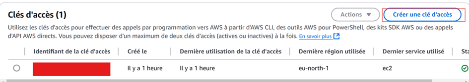 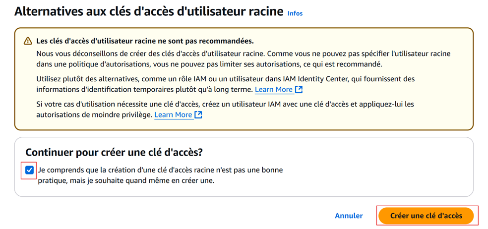 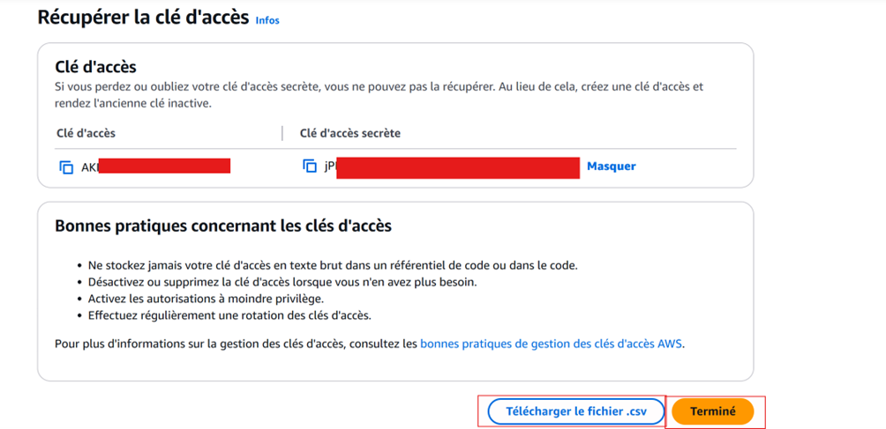
aws configure
# Entrez vos clés d'accès, la région et le format de sortie (par exemple, json)
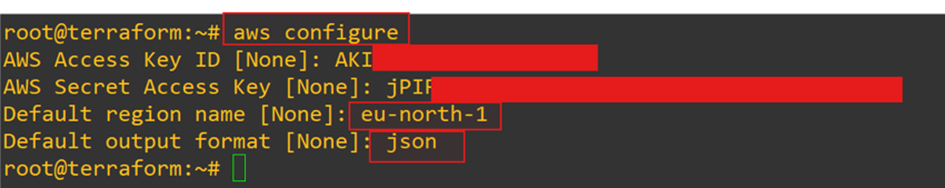
Créez maintenant un répertoire pour votre projet Terraform :
# Création du répertoire de travail Terraform mkdir ~/terraform-aws-project cd ~/terraform-aws-project # Créez le fichier main.tf pour définir votre infrastructure
nano main.tf
provider "aws" {
region = "eu-north-1" # Changez la région si nécessaire
}
# CREATION DU VPC
resource "aws_vpc" "main" {
cidr_block = "10.0.0.0/16"
enable_dns_support = true
enable_dns_hostnames = true
tags = {
Name = "TERRAFORMVPC"
}
}
# CREATION DU SEAU RESAU PUBLIC
resource "aws_subnet" "public" {
vpc_id = aws_vpc.main.id
cidr_block = "10.0.1.0/24"
map_public_ip_on_launch = true
tags = {
Name = "TERRAFORMPUSUB"
}
}
# Internet Gateway
resource "aws_internet_gateway" "main" {
vpc_id = aws_vpc.main.id
tags = {
Name = "TERRAFORMGW"
}
}
# Route Table for Public Subnet
resource "aws_route_table" "public" {
vpc_id = aws_vpc.main.id
route {
cidr_block = "0.0.0.0/0"
gateway_id = aws_internet_gateway.main.id
}
tags = {
Name = "PublicRouteTable"
}
}
# Route Table Association
resource "aws_route_table_association" "public" {
subnet_id = aws_subnet.public.id
route_table_id = aws_route_table.public.id
}
# Security Group
resource "aws_security_group" "web" {
vpc_id = aws_vpc.main.id
ingress {
from_port = 80
to_port = 80
protocol = "tcp"
cidr_blocks = ["0.0.0.0/0"]
}
ingress {
from_port = 22
to_port = 22
protocol = "tcp"
cidr_blocks = ["0.0.0.0/0"]
}
egress {
from_port = 0
to_port = 0
protocol = "-1"
cidr_blocks = ["0.0.0.0/0"]
}
tags = {
Name = "WebSecurityGroup"
}
}
#INSTANCE EC2
data "aws_ami" "amazon_linux" {
most_recent = true
filter {
name = "name"
values = ["amzn2-ami-hvm-*-x86_64-gp2"]
}
filter {
name = "owner-id"
values = ["137112412989"] # ID du propriétaire Amazon pour Amazon Linux
}
owners = ["137112412989"] # Amazon Web Services
}
resource "aws_instance" "web" {
ami = data.aws_ami.amazon_linux.id
instance_type = "t3.micro"
subnet_id = aws_subnet.public.id
vpc_security_group_ids = [aws_security_group.web.id]
tags = {
Name = "TERRAFORMWebServer"
}
}
3. Déploiement de l'infrastructure avec Terraform
Maintenant que votre projet est prêt, vous pouvez déployer l'infrastructure avec Terraform :
# Initialisation de Terraform dans votre projet
terraform init

# Génération du plan de déploiement Terraform
terraform plan
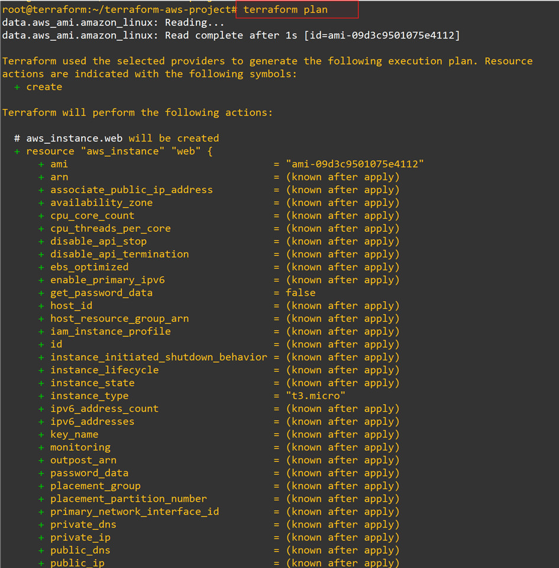
Validez le plan Terraform :
terraform apply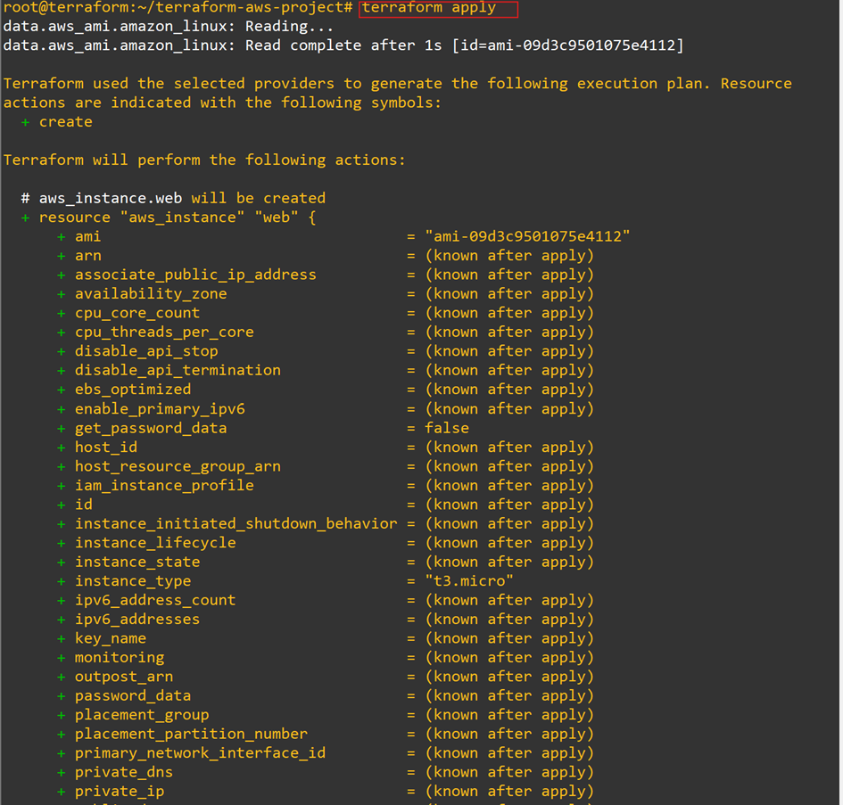 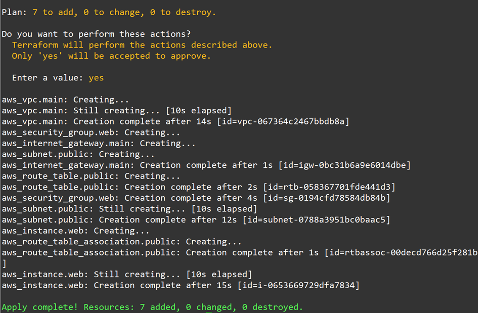
Verification
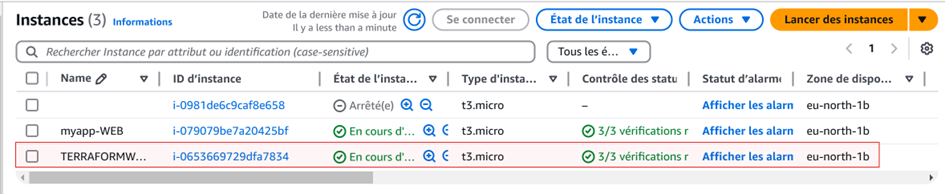 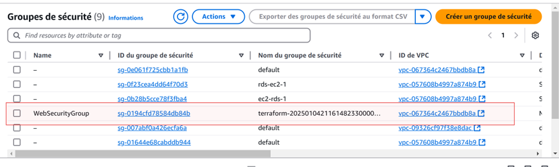 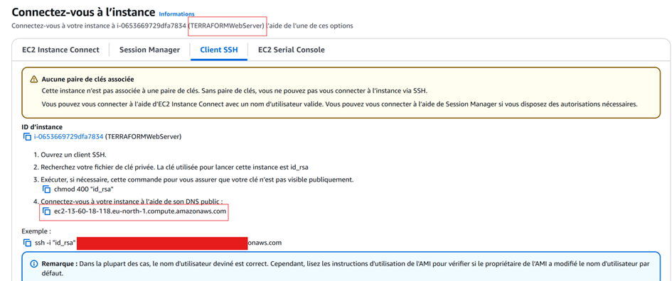Connection avec ec2 connect
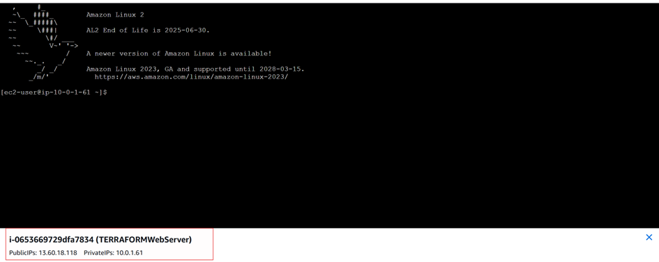Nous pouvons nous amuser à créer une petite page de bienvenue Pour cela télécharger les paquets nécessaires Sudo yum update Yum install httpd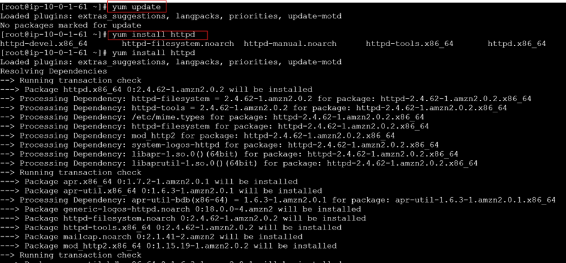 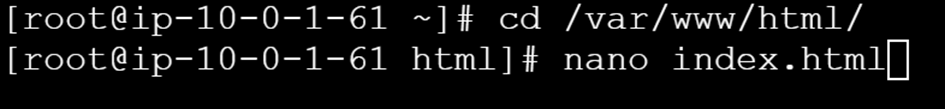 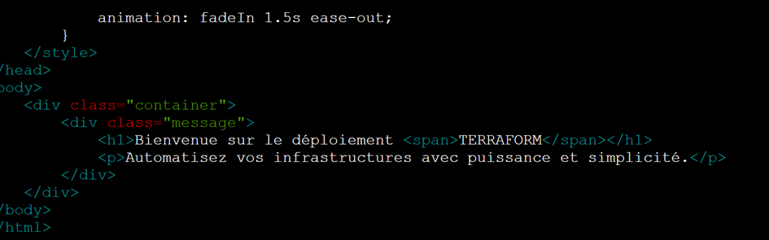
Puis on relence le service httpd
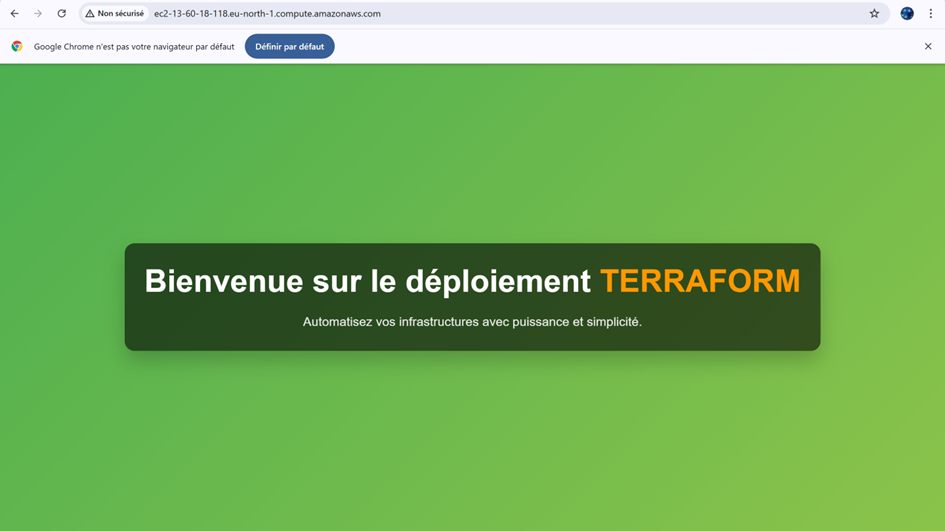